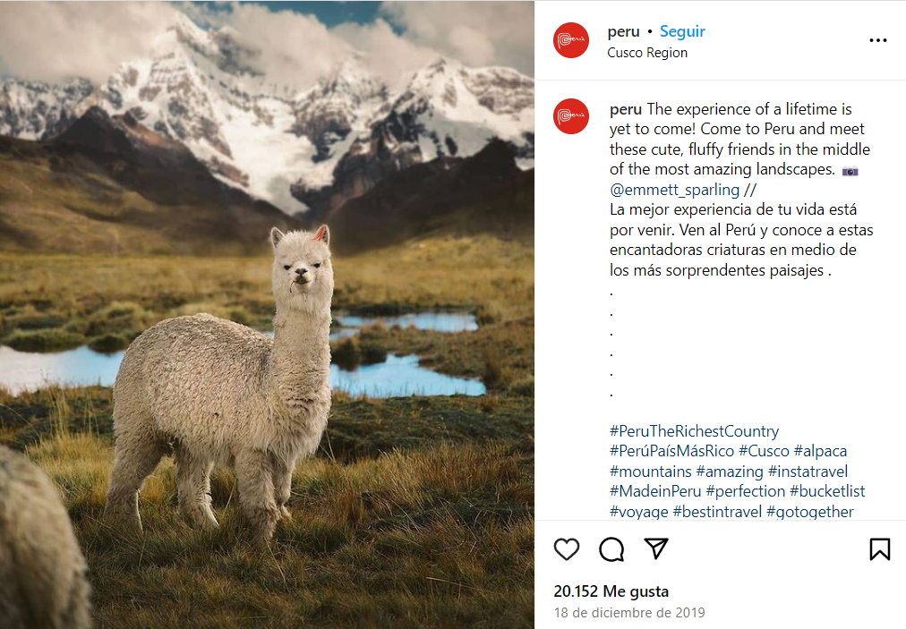

DESTINOS DEL PERÚ
Encuentra el destino que te gustaría visitar:
Descubre Perú: Una Tierra de Maravillas
Perú es un país fascinante, lleno de contrastes y destinos increíbles que van desde antiguas civilizaciones hasta paisajes naturales únicos en el mundo. Con una rica herencia cultural, impresionantes maravillas arquitectónicas y una biodiversidad exuberante, Perú es un destino que enamora a todo tipo de viajeros. Desde las alturas de los Andes hasta la costa del Pacífico, y desde las densas selvas amazónicas hasta el desierto costero, cada rincón de Perú guarda experiencias inolvidables.
Explora ciudades coloniales, como la capital, Lima, con su vibrante gastronomía y legado histórico, o Cuzco, la antigua capital del Imperio Inca. Viaja al corazón del país para descubrir la joya arqueológica de Machu Picchu, una de las Siete Maravillas del Mundo. Adéntrate en la naturaleza desbordante de la Amazonía o recorre los misteriosos geoglifos de las Líneas de Nazca desde los cielos.
Perú no solo es un viaje a través del tiempo, sino también una invitación a vivir la cultura local, desde los coloridos mercados andinos hasta los festivales tradicionales. Sumérgete en la aventura con deportes extremos en la Cordillera Blanca o relájate en las playas paradisiacas de la costa norte.
DESIERTO
Playa, Desierto
Ica
Un desierto,todas las experiencias
Debido a su proximidad con Lima, la capital del Perú, Ica es uno de los destinos ideales para escaparse: esta región sureña está ubicada a (aproximadamente) 4 horas de la urbe limeña y tiene un sinnúmero de actividades, tan distintas como divertidas, para los viajeros que se aventuren a recorrer su territorio.
Porque en Ica, las dunas de sus enormes desiertos resguardan el legado cultural e histórico de antiguas civilizaciones, como también son la locación de un oasis que parece sacado de una película o un cuento de hadas. En Ica abundan las hermosas playas con aguas refrescantes. Ese mismo mar que sirve para practicar tus chapuzones con tu familia y amigos, también es el hábitat de hermosas especies de fauna silvestre, que están ansiosas porque las visites.
En Ica hay una actividad distinta para cada tipo de visitante. Es un lugar donde el tiempo pasa volando, porque siempre hay algo qué hacer. Aquí te nombramos experiencias de sobra para que puedas elegir las que mejor se adecúan a tu itinerario de viaje.
En el mar la vida es más sabrosa
En Ica, puedes encontrar dos actividades ligadas al océano Pacífico. La más llamativa es, tal vez, la visita a la Reserva Nacional Sistema de Islas, Islotes y Puntas Guaneras, donde tienes la chance de tomar un viaje en lancha por las Islas Ballestas, un lugar mágico en el que puedes vivir muy de cerca la experiencia de cohabitar con amigables especies marinas.
Durante este trayecto, que está a una hora de las costas iqueñas, podrás ver a grandes familias de lobos de mar, que celebrarán tu llegada con sus cánticos naturales. A su vez, puedes toparte con pelícanos que sobrevuelan sobre las movidas aguas, así también como con pingüinos de Humboldt.
Además, Ica cuenta con un conjunto de islas de arena fina, aguas mansas y cristalinas. Entre las más visitadas están playa La Mina, Roja, Mendieta, El Raspón y Trompa de Elefante. Estas no solo sirven para jugar con las olas de mar, sino también para realizar actividades como pesca artesanal o practicar deportes acuáticos.
No solo se disfruta en el mar
También hay diversión en la arena y los cielos iqueños. Uno de los puntos turísticos más visitados, es la Laguna de la Huacachina, que está rodeada por comercios, restaurantes, bares, discotecas y hoteles para todos los gustos. Esta laguna está ubicada en medio del desierto, lo que la hace una locación impresionante a la vista.
Con respecto a los aires, puedes tomar una avioneta para avistar de una forma única las Líneas y Geoglifos de Nasca y Palpa. En esta aventura aérea, podrás ver la magnitud y legado de las antiguas civilizaciones que reinaron esta zona del antiguo Perú.
Principales atractivos
MONTAÑA
Montaña

Puno
Donde nace el imperio inca
Un lugar plagado de atractivos y encantos. La casa del Lago Titicaca, de donde, según cuenta la leyenda, emergieron desde sus aguas los hijos del Sol, Manco Cápac y Mama Ocllo, para civilizar a las masas, venerar al Dios Sol y fundar el poderoso Imperio Incaico. Así es Puno, lleno de misticismo e historia milenaria, donde su gente te encantará, su clima te fortalecerá y sus atractivos te enamorarán.
Porque en Puno todo está relacionado con la historia del antiguo Perú, ese del cual surgieron las primeras civilizaciones, y que aún conservan sus enseñanzas y prácticas hasta el día de hoy: basta con ver sus pueblos originarios, en las que practican aún costumbres ancestrales que terminan siendo uno de los atractivos más poderosos para turistas nacionales y extranjeros.
¡Historia y cultura en todo su esplendor!
Ahora, ¿cuáles son los atractivos para visitar en Puno? Son incontables e inacabables. El principal y primordial, que se lleva todos los reflectores de visitantes del Perú y de todo el mundo, es el Lago Titicaca. Esta enorme porción de agua es un Patrimonio Natural del Perú que guarda sobre sus aguas islas flotantes (Uros, Taquile y Amantaní, entre otras) historia y cultura ancestral. Es, además, el lago navegable más alto del planeta, por lo que podrás visitar a las comunidades que habitan estas porciones de suelo creadas a partir de la totora (material que también sirve para crear sus balsas y botes), en la que conviven perfectamente con la naturaleza.
¿Prefieres, además de conocer la naturaleza puneña, un poco de historia ancestral? Existen diversos Complejos Arqueológicos que te quitarán el aliento, pero los que no puedes dejar de conocer y recorrer son el Complejo Arqueológico de Cutimbo, el centro funerario más importante del sur del Perú, y el Complejo Arqueológico de Sillustani, también conocido como Chulpas de Sillustani, un antiguo cementerio vinculado a rituales funerarios de las culturas Inca, Colla y Tiahuanaco.
Eso sí, si pasas por Puno, es casi una obligación probar su deliciosa gastronomía. En el puerto del Lago Titicaca, te ofrecerán una deliciosa trucha frita, que puedes acompañar con arroz, papas fritas o sancochadas. En las diversas ciudades que visites, anímate a degustar un delicioso Caldo de cabeza, Sancochado, Chairo, o un sustancioso Chupe de Quinua. Mención aparte merece el Kankacho, un delicioso preparado de cordero asado que te encantará.
Acceder a Puno no es complicado. Existen dos rutas para llegar al centro de la ciudad. La primera, es vía aérea (desde Lima, la capital del Perú, el vuelo toma 1 hora y 40 minutos, aproximadamente), en la que aterrizas en la ciudad de Juliaca para luego trasladarte en bus hacia la ciudad de Puno. El trayecto en la movilidad de cuatro ruedas no es mayor a una hora. La otra alternativa, es más para los viajeros de espíritu aventurero: un viaje por carreteras que dura 21 horas, en la que pasarás por las regiones de Lima, Ica y Arequipa antes de llegar a Puno.
Principales atractivos
PLAYA
Playa
Piura
Donde el verano nunca termina
Si hay un destino que destaca por sus paradisíacas playas, deliciosa gastronomía y cálido clima, es sin duda Piura, atractivo norteño que debes visitar
Ubicada al norte peruano, Piura tiene lo que el turista necesita para pasar unos días de ensueño. Desde sus playas como Máncora, Los Órganos, Vichayito, Colán, Cabo Blanco y Lobitos, hasta su hermosa sierra y su deliciosa gastronomía, en la que destacan el Cebiche, el Seco de chavelo, la Malarrabia y el Seco de cabrito, Piura es el lugar perfecto para disfrutar unas vacaciones inolvidables.
Majestuosas playas
Este es sin duda uno de los mayores atractivos de Piura. Y es que las playas de este destino, reciben a miles de visitantes cautivados no solo por su cálido clima, sino también por sus olas que atraen a surfistas de todo el mundo para diversas competiciones o para pasar un placentero momento en el mar.
Entre las playas más visitadas están Máncora, Los Órganos, Vichayito y Cabo Blanco. Esta última alberga una gran historia pues es aquí donde el reconocido escritor estadounidense Ernest Hemingway llegó para pescar el merlín negro, pez protagonista de algunas escenas de la película El viejo y el mar, basada en su novela homónima de 1952.
Sierra piurana
Si bien es, probablemente, una de las zonas menos conocidas de Piura, cuenta con diversos atractivos que no debes dejar de visitar. Uno de ellos son las Lagunas de Las Huaringas, ubicadas en la provincia de Huancabamba, todos los años reciben miles de turistas que llegan a este lugar atraídos por sus “poderes” esotéricos y propiedades curativas.
Siguiendo en Huancabamba, se encuentra Canchaque –conocida como ‘La Suiza piurana’- ciudad que ha sido declarada como La capital turística de región Piura. Ofrece al visitante atractivos como las cataratas de Chorro Blanco, el cerro de Huayanay y los peroles de Mishahuaca. Estos últimos resaltan por sus “tinas” de agua, formadas por la erosión de la roca que forma.
Piura y su artesanía
Otro de los grandes atractivos de esta región está en su artesanía, actividad que resalta por la belleza de sus trabajos y por ser motor de la economía de diversas ciudades como Catacaos. Ubicada a 12 km de la ciudad de Piura, es reconocida por sus tejidos en algodón y, especialmente, por sus filigranas en oro y plata, sombrero de paja toquilla. Estos dos últimos son reconocidos como Patrimonios Culturales de Perú.
También en Catacaos, se encuentra la Huaca de Narihualá. Esta edificación de barro -que alcanza los 40 metros de altura-, fue hogar del místico Dios Walac y está custodiado por el legendario perro viringo, reconocido como el perro distintivo del Perú. Según recientes investigaciones, habría sido un lugar de asentamiento de los tallanes, cultura preínca que ocupó las costas peruanas.
Exquisitos potajes
Por último y no menos importante, está la gastronomía piurana. Destacan platos como Cebiche de mero, Seco de cabrito y el Seco de chavelo. Este último basa su preparación en plátanos bellacos cocidos y triturados, a los que se les agrega carne aliñada, tomate, ají panca y cebolla. También es posible degustar de la deliciosa langosta, conchas negras y la infaltable chicha de jora (bebida fermentada a base de maíz).
Principales atractivos
VALLE
Valle

Cusco
Imperio viviente
En Cusco, cada rincón está plagado de historia. Porque la antigua capital del Perú (durante el Imperio Inca), aún mantiene vestigios de lo que fuera el poderío más importante de esta antigua civilización.
La historia milenaria se respira en cada paso que des por las calles de sus pueblos, que parecen haberse detenido en el tiempo. Sus ciudades, que están plagadas de tanto misticismo que no querrás irte jamás. Y si tienes que partir, siempre habrá ese deseo que te consume por dentro para volver lo más pronto posible.
El primer paso, es llegar al Cusco. ¿La forma más sencilla? A través de un vuelo. Debido a la alta demanda de turistas, era imposible no contar con un aeropuerto internacional en el Cusco, aunque la mayoría de vuelos tienen que pasar por Lima, antes de llegar a la ciudad imperial. Desde la capital peruana, toma una hora y 15 minutos, aproximadamente, llegar al destino elegido.
Pues bien, una vez que estás en el Cusco, solo hace falta organizarte de la mejor forma para conocer la mayor cantidad de atractivos y experiencias que puedas imaginar. ¿Te gusta el andinismo? Un viaje por el Ausangate, conocida también como la montaña sagrada, calmará esa necesidad por liberar esa energía acumulada que tienes. ¿Amante de la naturaleza? No te puedes perder una visita al Valle Sagrado, que cuenta con pueblos que parecen haber salido de las fábulas más creativas que puedes imaginar. ¿Te derrites por los animales? Sí, también hay espacio para los seguidores de la fauna: Awanakancha, el único centro de interpretación de camélidos sudamericanos, está ubicado en el Cusco.
La joya cusqueña
Pero este viaje no estará completo si es que no te unes al espíritu incaico. Sí, hablamos de una visita a una de las maravillas modernas del mundo, la gran joya cusqueña y del Perú: el imponente, venerado y ostentoso Santuario Histórico de Machupicchu, el punto final y de partida de todo turista que visita el Cusco. Este Patrimonio cultural y natural de la humanidad fue uno de los centros religiosos, culturales y políticos más importantes del imperio incaico y quienes lo visitan, coinciden en que se siente una energía única.
Huayna Picchu, Sacsayhuamán, Vinicunca, Urubamba, Choquequirao, la Laguna Humantay, Ollantaytambo, y el Camino Inca para los amantes del trekking. Las opciones para hacer turismo en el Cusco son infinitas. Incluso, en la misma ciudad hay un sinfín de actividades y atractivos por descubrir: puedes comenzar a conocer un poco de la historia cusqueña a través de un paseo por su Centro Histórico o la ruta del Barroco Andino, donde podrás apreciar edificaciones con el antiguo toque colonial.
Los museos son un espacio predilecto para los visitantes y uno que no puedes dejar de conocer es el Templo del Sol (Qorikancha). Además, asómbrate con la piedra de los doce ángulos o maravíllate con el arte de los artesanos del barrio San Blas. Una visita por el colorido mercado San Pedro puede darte una idea de la idiosincrasia de los cusqueños.
Así que, si eres un aventurero, no lo pienses mucho: Cusco te espera con los brazos abiertos. Y si no tienes esa alma salvaje, el Cusco también es para ti: la ciudad cuenta con hoteles y restaurantes con los más altos estándares de calidad, que cubren los requerimientos de los viajeros más exigentes. Decídete ya, el Cusco ya está listo para recibirte.
Principales atractivos
SELVA
Selva
San Martín
Donde cataratas y lagos se encuentran
El corazón de la Amazonía peruana late cada vez que los aventureros visitan San Martín. Esta región norteña del Perú, guarda consigo la naturaleza en su más puro estado: puedes recorrer las trochas rodeadas de vegetación y fauna y, de pronto, empezar a escuchar un ensordecedor pero tranquilizante sonido de agua cayendo de manera muy fuerte y, a su vez, muy revitalizante.
Esta región contiene joyas naturales únicas en el Perú, por lo que, si te gusta la aventura, un clima cálido y templado –según la zona– y estar rodeado de paisajes preciosos con abundante vegetación, San Martín es el lugar indicado para que planees tus próximas vacaciones. Es así: desde la imponente catarata Ahuashiyacu, pasando por la Laguna Azul o elegir el Lago Lindo como próximo destino, no te arrepentirás nunca de visitar esta hermosa tierra.
Pero San Martín no es solo sinónimo de naturaleza. En esta región, también hay espacio para realizar diversas actividades, tanto históricas como culturales. Para empezar esta aventura, lo primero que debes hacer es llegar a la ciudad de Tarapoto (fundada en 1782 con el nombre de Santa Cruz de los Motilones de Tarapoto), capital de la provincia de San Martín y, a su vez, el distrito de mayor importancia. ¿La razón? Todo pasa por Tarapoto.
En Tarapoto se ubica el aeropuerto más importante de la región –que, incluso, sirve de trayecto para otros puntos del nororiente del Perú–, que recibe vuelos desde Lima (el traslado desde el Aeropuerto Internacional Jorge Chávez toma una hora y quince minutos, aproximadamente), y donde puedes encontrar una oferta variada de hospedajes, con los más altos estándares de calidad; restaurantes, con los potajes más aclamados de la zona; y agencias de viajes, las que te ofrecerán diversas aventuras durante tu estadía.
En la Plaza de Armas de la ciudad, puedes ir conociendo un poco más sobre San Martín a través de su centro artesanal, que contiene textiles, cerámicas y bisutería, entre otros, con motivos locales. Otro punto para apreciar y hacer compras es el complejo arqueológico de Gran Pajatén, en el distrito de Chazuta, donde artesanas crean y exhiben piezas decorativas que atraen las miradas de turistas extranjeros. Estas cerámicas han sido declaradas Patrimonio Cultural del Perú.
Donde empieza la aventura es en la catarata de Ahuashiyacu, ubicada a 15 kilómetros de la ciudad de Tarapoto, en el Área de Conservación Regional Cordillera Escalera. Esta caída de agua, ubicada en las cercanías de la selva alta, tiene un aproximado de 40 metros de altura y su decoración, de helechos, orquídeas, flora y fauna, la hacen aún más hermosa. Si quieres estar rodeado de agua, pero que esté más calmada, debes visitar la Laguna Azul y el Lago Lindo, donde puedes pasar grandes momentos en pareja o en familia y practicar algunos deportes acuáticos.
Trasládate a la ciudad de Rioja para que puedas disfrutar de paseos en bote por el Naciente del río Tío Yacu, visitas al Mirador del Bosque de Proyección Alto Mayo o a la Reserva ecológica de Santa Elena, además de realizar una aventura en la Cueva de Palestina; o a la ciudad de Juanjuí, para una visita guiada por el Parque Nacional del Río Abiseo o para que te muestren las bondades del cacao a través de la Ruta del Cacao y sus zonas agrícolas.